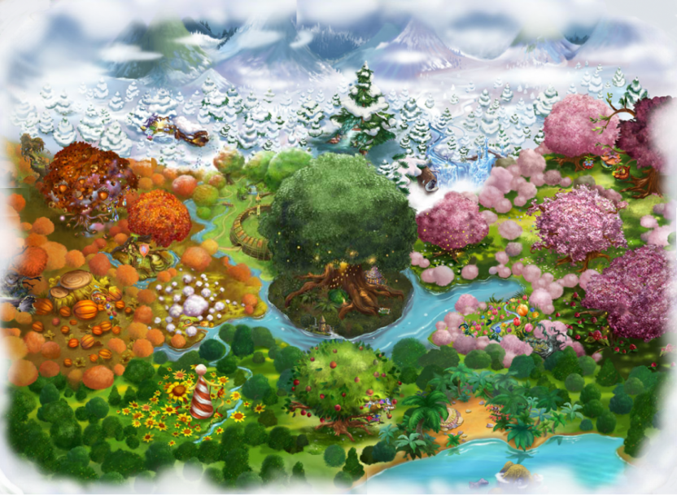
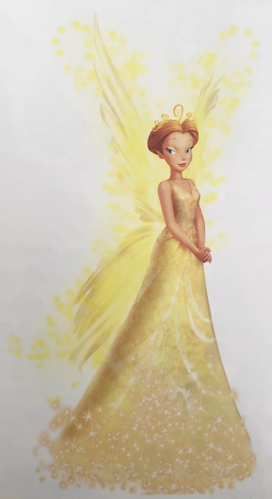

Las hadas como la famosa 'Campanilla' habitan en la Hondonada de las Hadas (la cual forma parte de "Nunca Jamás"). Estas criaturas mágicas son pequeñitas y todas tienen siempre trabajo que hacer, pues son las encargadas de preparar, por ejemplo, el otoño que acaba de llegar; es decir, las estaciones no son obra de la naturaleza, sino que es obra de las hadas. Cuando hay un cambio de estación, las hadas correspondientes van a "Tierra Firme" (el mundo de los humanos) para hacer su trabajo, dependiendo de qué se encargue cada una, realiza su tarea.
Este mundo de las hadas abarca muchos términos y explicaciones fantásticas antes al razonamiento natural y científico, tienen su propia organización y sus propia forma de magia como lo es el polvo de hadas; por lo que, antes de nada, se presentará una tabla con todos los términos desconocidos que puedan causar confusión.
| Términos | Definición | |
|---|---|---|
| Polvo de hadas | Proviniendo del Árbol de Polvo de Hadas -la fuente de vida de las hadas-, son unos polvos amarillos que da el poder y el vuelo a todas las hadas. Sin él, no pueden hacer prácticamente nada. | |
| Don o talento | El don de un hada es la habilidad con la que nace, para realizar tareas, relacionadas con éste, toda su vida |
Aun así, no todas las hadas viven en el mismo sitio, dependiendo del tipo de don, residen en unas zonas u otras. Éstas se caracterizan por cuatro lugares principales:

Aunque casi todas las hadas participan en todas las estaciones (menos las del Invierno), lo que influye es lo ocupadas que están según la estación que preparan. Por ejemplo, las hadas de la luz y el agua no solo trabajan en el verano, sino también en la primavera, a su vez que las hadas de los animales trabajan en el verano y la primavera para despertar a los animales.
Para ver los diferentes tipos de hadas más a detalle, haga click en el siguiente enlace:
Tipos de Hadas (detallado)En la Hondonada de las Hadas también hay una jerarquía, y de echo, disponen de su propia reina. Ésta es un hada con el don de liderazgo, nacida de una estrella caída; este tipo de hadas no son para nada común, pueden llegar a tardar cientos de años en nacer, por lo que pueden llegar a reinar durante mucho tiempo, cargando con grandes responsabilidades. Cuando nace una estrella caída se convierte en princesa, en la sucesora; y la reina, es la encargada de prepararla y enseñarle todos los conocimientos necesarios para ser reina, incluído cómo controlar su magia, hasta el día de su coronación.
La reina suele destacar por su brillo, diez veces más intenso que las demás hadas, y por sus grandes alas y vestido cubierto de polvo de hadas.

Por cada estación y lugar dentro de la Hondonada de las Hadas, hay ministros, los cuales su papel es liderar a todas las hadas bajo su mando, organizar las tareas que se deben de hacer y que están en proceso y asegurarse de que todo vaya bien y esté en orden:
El resto de las hadas formarían parte de esta categoría. Estarían ordenadas según sus talentos, pero llevaría tanto tiempo nombrarlos todos que hasta puede que no llegara a nombrarlos todos.